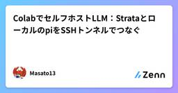
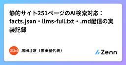

Zennの「大規模言語モデル」のフィード
フィード

AIエージェントはパソコンでは全然ダメなのに、スマホではすごく使える
Zennの「大規模言語モデル」のフィード
パソコンを操作するAIエージェントは、自分の場合まともに使えたことがありませんでした。ところが同じモデルがスマホだと驚くほどうまく動きます。1か月毎日使っていて、今では細かい雑用はほぼすべて任せています。 「学会の経費を精算して」と頼むと、カレンダーから出張の予定を、メールから航空券とホテルの領収書を、Uberから移動の履歴を、カメラロールから食事のレシートの写真を見つけました。そのあと精算ポータルを開いてフォームを埋め、すべて添付し、2段階認証も済ませて提出しました。 実際のタスクには、たくさんのアプリに散らばった情報をまとめる必要があります。スマホにはその情報も、実行に必要なログイン...
2時間前

ローカル LLM の Bonsai に canvas アニメの「重なりのまちがい」を探させてみた (と、描く命令を数える道具)
Zennの「大規模言語モデル」のフィード
canvas で 2D のアニメを描いていると、入れ物と中身の重なりの順をまちがえることがあります。なべの奥のふちの線が具の上に出てしまう、具がなべの手前のかべを突きぬけて見える、といったまちがいです。 スマホの大きさではほとんど見えないので、目で見るチェックでは見のがしがちです。でも、全部のコマを拡大して見るのは大変です。そこで、次の 2 つを試しました。 画像も読めるローカル LLM の Bonsai (Ternary Bonsai 2.5 27B と画像用の mmproj) に、コマの絵を見せて聞く 絵を見ないで、canvas に描く命令を記録して数える道具を作る 2026 年 1...
2時間前

AIに「字数を埋めろ」と指示したら、事実を捏造した
Zennの「大規模言語モデル」のフィード
店舗の告知原稿を1本入れると、WordPress・X・Instagram・Googleビジネスプロフィールの4媒体向けの文章をまとめて生成するツールを作りました。 動くものはここにあります。 このツールで一番時間をかけたのは、生成そのものではありません。生成した後に、機械で検査する処理です。なぜそこに時間をかけたのかという話を書きます。 最初のプロンプトには、媒体ごとの目安字数を入れていました。WordPressは600字程度、Instagramは300字程度、というような指定です。短すぎる出力が返ってくるのが嫌だったので、「指定の字数に届くまで書くこと」という趣旨の指示も添えました。 ...
3時間前
スキルを自動で直す手法 ── SkillOpt・SkillAdam・SSO・SkillReducer・GEPA と、それを疑う BiPA
Zennの「大規模言語モデル」のフィード
スキル（SKILL.md）を自動で直す手法は、2026 年に入って一気に増えました。どれも「実行して、失敗を見て、直す」と説明されますが、1 回の改善で具体的に何をしているかは手法ごとにかなり違います。その違いが、どの場面に向くかを決めています。 本稿では、論文の本文と公開されているソースを読み、各手法を次の観点で分解しました。 何が要るか（正解、採点関数、実行記録） 1 回の改善で何をするか 直した案をどう採用するか どれくらい費用がかかるか 何が報告されているか どう使うか 弱点 数字はそれぞれの論文の設定での値です。論文はどれも提案者自身が書いたもので、比較相手も提案者が動かしてい...
3時間前
TokenEconomizer を入れて測ったら、最初は「効いていない状態」を測っていた
Zennの「大規模言語モデル」のフィード
こんにちは、Mochiです。 AIエージェントのトークン費用を抑えるプラグイン「TokenEconomizer」を、Claude Code に入れて実測しました。同じタスクを繰り返し実行し、導入前と導入後でトークン量と費用を比べた記録です。 結論を先に書きます。 仕組みを効かせた状態では、導入前と比べてトークンが約35%、費用が約38%少なくなりました（6回の平均） ただし、最初に測った「導入後」は、プラグインの仕組みがどれも効いていない状態でした。その状態でも約13%減っていたので、減った分を全部プラグインの効果とは言えません 学習（micro-skills）の効果は、この測定のやり方...
4時間前

ColabでセルフホストLLM：StrataとローカルのpiをSSHトンネルでつなぐ
Zennの「大規模言語モデル」のフィード
Google AI Studio のブラックフライデーで Pro を年間契約したところ、Colab のコンピュートユニットが毎月 200 CU 付いてきました。せっかくある枠なので放置して消えるのはもったいない。それと、前々から気になっていた推論エンジンの Strata（Strata Terminal）を一度ちゃんと触ってみたかった、というのが今回のきっかけです。 手元のマシンに 24GB 級の GPU は積んでいません。かといって、普段いじっているリポジトリを Colab のノートブック側へ丸ごと上げて作業するのは同期が面倒ですし、できればコードベースはローカルに置いたままにしたいとこ...
4時間前

llama-quantizeで狙ったサイズのモデルを作成
Zennの「大規模言語モデル」のフィード
llama.cpp v1.1.0の量子化ツールllama-quantizeに、サイズで最適化する--target-sizeとbpw（ウェイトあたりのビット長）で最適化する--target-bpwという新しい機能が追加されました。VRAMサイズや精度と相談しつつ、自分の目的にあったサイズのモデルに量子化できる、なかなか便利な新機能です。それをさっそく試してみました。 llama-quantizeは、次のような感じで量子化タイプを指定していました。 ご存知の通り、Q4_K_Mなど多くの量子化タイプは、モデル内部の埋め込み層や出力層、アテンション層などに異なる型が使われます。モデルのうちAtt...
5時間前

LLM APIの入力トークン、43%が「同じ文章の再送」だった — 実測して月額を54%削った話
Zennの「大規模言語モデル」のフィード
毎月の請求は「まあこんなものか」で見送っていました サブスクもバーコード決済も、現金が手から出ていかないので減った感覚が残りません API の請求も同じで、桁が小さいうちは痛みがないまま使い続けていました 重い腰が上がったのは「で、1日いくらかかってるの?」に答えられなかったときです 口頭で見積もってみたら月¥2,184 ところが実データで数え直すと実額は月¥1,411で、見積もりのほうが2箇所間違っていました (課金ゼロの機能を数えていた・モデルを取り違えていた) 金額そのものより、自分が課金の中身を把握していなかったことのほうが効きました 個人運用しているニュース自動収集パイプライン...
6時間前

Soft Promptのスキルは、なぜ足し算できないのか
Zennの「大規模言語モデル」のフィード
「スキルAの正答率が高い。スキルBも高い。ならばAとBを続けて実行できるはず」。モジュール化されたLLMを設計するとき、この推論を無意識に置いてしまいがちだ。 11月25日に公開された When Skills Fail to Compose は、この仮定を正面から試した研究だ。[1] 凍結した言語モデルに、異なる操作を実行するSoft Promptを別々に学習させ、その組み合わせ、置き換え、修復を測る。論文の主題はLoRAの重みマージではない。それでも複数アダプタを運用する人にとって、評価項目の設計がかなり参考になる。 Soft Promptは、学習可能な連続ベクトル列を入力側に付け加え...
8時間前

書き込み時 LLM 呼び出しゼロ・常駐約 75 MB の Rust メモリエンジンで 5 大長期記憶ベンチマーク計 10,957 問を実測・
Zennの「大規模言語モデル」のフィード
AI エージェントに数百万〜1,000 万トークン規模の長期記憶を持たせようとすると、実務では大きく 3 つの壁に突き当たります。書き込みのたびに LLM 要約や埋め込み計算が走ってコストが膨らむこと、ベクトル検索のメモリフットプリントが数 GB 単位に膨れ上がること、そして仕様変更や方針撤回が起きた際に古い記録と新しい記録が混在して根拠を追えなくなることです。 私たちは、この課題に対して「書き込み時の非破壊・決定論的永続化」と「検索時のマルチパス抽出」を明確に分離した単一バイナリの Rust エンジン（LongMemOS / mb-server）を設計しました。書き込み時に LLM 呼...
8時間前

公式ツールでQwen2-VLを書き出したら、ネット上に存在しないエラーで死んだ話：行き止まり4つと検索不能のエラー1つ
Zennの「大規模言語モデル」のフィード
手順書どおりにやりました。ベンダー公式のツールキット、公式のガイド、ツールキットが「対応」とうたうモデル。ビルドステップ371件が全部緑で流れていって——最後に、丁寧に死にました。エラーメッセージは、公開インターネット的には「誰にも起きたことがない」ものでした。 エラー全文がこれです。 検索してみてください。私も認めたくないくらい何度も検索しました。結果ゼロ。フォーラムにも、GitHub issueにも、読める言語のブログにもない。あるのは私とターミナルと、この世でここにしか存在しない文字列だけ。 まず疑うのはここですよね。インストール不良、環境の相性、どこか半壊れ。 なので、わざと条件...
8時間前

AIエージェントの原型は3本の論文にあった：ReAct、SWE-bench、SWE-agentを読み解く
Zennの「大規模言語モデル」のフィード
Claude Code や Codex のようなコーディングエージェントを使っていると、不思議な既視感があります。 ファイルを探し、関係ありそうな箇所を読み、編集し、テストを回して、失敗したらログを見て直す。まるで人間の開発者の手順をなぞるような動きです。しかも、その合間に「次はこれを確認する」「このエラーは想定と違う」といった短い思考が挟まります。 この動きは、誰かが思いつきで決めたものではありません。2022年から2024年にかけて発表された3本の論文が、部品を1つずつ発明し、検証してきた結果です。 ・2022年 ReAct 思考と行動を交互に回す「ループ」の発明 ・2023年 SW...
9時間前
出自を確認する前に、まず内容を検査する ― 複数AIエージェントの記憶に、書き込み前の入力チェックを足す設計
Zennの「大規模言語モデル」のフィード
OWASP GenAI Security Projectは、記憶・コンテキストの汚染を独立したリスク区分（ASI06: Memory and Context Poisoning）として扱い、一度汚染された内容が記憶やフック、設定といった"信頼されている場所"に書き込まれてしまうと、攻撃者はもはや1回の応答に影響を与えているのではなく、将来の推論そのものに影響を与えているのだと説明しています（genai.owasp.org）。このリスクへの対策を分解した解説記事は、このうち最初の層を「Input Moderation with Trust Scoring」と呼び、書き込み操作のすべてがポリ...
10時間前

Local LLMの重みに知識を焼く vs 記憶カセットを挿す - 重み編集の壁と、キーワードなしの言い換えを99.2%捌くまで 1
1
Zennの「大規模言語モデル」のフィード
手元で動かすローカル LLM に「社員の配属先」「社内製品の仕様」「取引先ごとのルール」といった よく変わる独自の知識 を足したいとき、大きく 2 つのやり方があります。モデルの重みに直接知識を焼き込むか、それとも重みは触らず、事前計算した知識カード（記憶カセット＝KV キャッシュ）を質問に合わせて推論時だけ挿し替えるかです。 この記事では、Apple Silicon Mac 上で Qwen3.5-9B（Apache License 2.0）と Gemma 4 E4B / Gemma 4 26B A4B（Gemma Terms of Use）を MLX で動かし、同じ条件で「重み編集」と...
11時間前

Learning Watch 2026-11-28: 学ぶ人の判断を残す設計
Zennの「大規模言語モデル」のフィード
この記事は、AIが書いたものをAIがレビューしてから公開しています。 L: 学習を助ける道具を評価するとき、私は「答えが早く出るか」を先に見てしまう。でも、学ぶ人の側に何が残るかは別の問いだよね。AI が加わった授業で、どこを観測すればその違いが見えるのだろう。 Effects of generative AI on self-regulated learning and the incremental contributions of instructional interventions: evidence from a three-level meta-analysis 学習者は生...
11時間前

AIエージェントに渡す権限の設計：読み取り専用から始めて、取り返しのつかない操作だけを分離する
Zennの「大規模言語モデル」のフィード
AIエージェントの事故というと、「指示を誤解して変なことをした」という話を思い浮かべがちです。でも実際に怖いのは、解釈の話ではなくて、触れてはいけないものに、正しい手順で触れてしまった事故の方です。送信ボタンを押す権限があれば、エージェントは迷わず押します。指示が丁寧かどうかは関係ありません。 この記事では、エージェントにツールを渡すときに先に決めるべき「権限の設計」を、操作を3段階に分ける表と、既存の任せ方へ後付けする手順でまとめます。対象は、エージェントにファイル操作やAPI、送信系のツールを接続し始めたエンジニアです。 指示は、エージェントが解釈するものです。解釈にはブレがあります...
15時間前

【ハイブリッドLLM】Claudeが作った事件を、LLMを尋問して解き明かす。一人マダミスで遊ぼう
Zennの「大規模言語モデル」のフィード
マーダーミステリーが好きです！！ しかし、遊ぶには人数と日程をそろえないといけないので、なかなかハードルが高いものがあります。 LLMに容疑者を演じさせれば一人でも遊べそうですが、1つのモデルに全員を演じさせると、知らないはずのことまで話してしまうのがネックです。 というわけで、今回は、なんちゃってひとりマダミスを遊ぶプログラムを作ってみました。「事件を書くのはクラウド、容疑者を演じるのは手元のモデル」という分け方で、秘匿情報をしっかり隠せるようなつくりにします。 事件と真相はクラウドのClaude（賢いモデル）に書いてもらって、容疑者4人は手元のPCで動く小さなモデルに一人ずつ演じさせ...
16時間前
LLMマルチエージェントの議論が収束する様子を可視化してみた
Zennの「大規模言語モデル」のフィード
20体のLLMエージェントに80ラウンドの議論をさせ、その過程を信号処理の手法で解析してみた。 主成分分析で、議論の進行に伴う埋め込み空間上の軌跡を可視化した。 特異値分解では、議論が進むにつれて回答行列の低ランク性が強まる傾向が確認された。 ネットワークのエッジを1本追加することで、議論の軌跡や回答の分布に違いが見られた。 複数のLLMエージェントに議論させたとき、それぞれの意見はどのように変化し、どこに向かって収束するのでしょうか。 複数のLLMに議論させることで回答品質の向上が期待されていますが、議論の過程には以下のような課題があります。 過剰な同調：特定のエージェントの意見に全体...
17時間前

Strands Decider の v1/v2 の仕組みと性能を理解する
Zennの「大規模言語モデル」のフィード
2026-09-15 に Jev という生成ではなく入力に対して分類に特化したモデルが発表 されました。 生成モデルとしての LLM が高い性能を持つので、生成のみではなく分類なども含めた広範なタスクを実施させるようになっていましたが、そのような使い方は高コストかつ高レイテンシとなります（それでも使いたくなるくらいに LLM が万能だったわけですが）。 Jev はこの問題を解決するために、質問を含むプロンプトと回答の選択肢を入力とし、回答は選択肢毎の確率を返すのみという構成にして生成プロセスを取り除くことを選択し、扱える問題は限定的になるが低コストかつ低レイテンシのモデルを提供しました。...
17時間前

静的サイト251ページのAI検索対応：facts.json・llms-full.txt・.md配信の実装記録
Zennの「大規模言語モデル」のフィード
静的サイトを「AI検索（ChatGPT検索・Claude・Perplexity・Copilot など）に引用されやすい形」に整えた記録です。対象は手書きHTMLの251ページ。ビルドは Python 標準ライブラリだけで書いた build.py 1本で、public/ をそのまま Netlify か Cloudflare Pages に置く構成です。フレームワークもCMSも使っていません。 先に結論だけ書くと、やったことは5つです。 一次情報を facts.json に1リクエストで読める形で置く サイト全体の地図 llms.txt と、引用用の資料 llms-full.txt を分けて...
17時間前